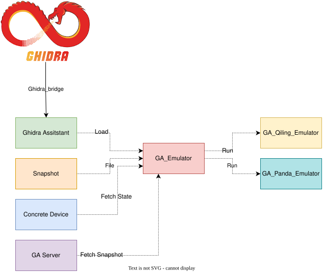

GA Emulator
The GA Emulator is not an actual emulator, but a setup layer on top of existing emulators.
The advantage for this is that we can use existing emulators without having to implement our own emulator environment.
The goal is to have multiple inputs for the Emulator. For example, when there is only a Ghidra project, that could be used as input.
But if there is also a Conrecte Device or an existing snapshot this could also be used as staging point.
An overview of the emulator in correspondence with Ghidra can be seen below:

Basic Emulator setup
To emulate one of the targets, the following folder structure is maintained(if possible):
tree -L 2 ../../remote_devices/amlogic_S905X3
../../remote_devices/amlogic_S905X3
├── emulated
│ ├── GA_emulator.py
│ └── snapshot.bin
├── GA_debugger.py
├── libs
│ ├── pyamlboot.py
├── notes.md
Notice the emulated folder, that contains the code for the hooks or emulator for this device.
The code GA_emulator is expected to have several functions which setup the emulator:
def emulator_setup(em : "GA_Emulator"):
pass
def emulator_main(em : "GA_Emulator"):
pass
When the emulator is setup, these functions will be executed.
GA Server
Another advantage of this is that it should be possible to run multiple emulators from the GA Server.
In the future this could then be used to scale emulation and vulnerability research.